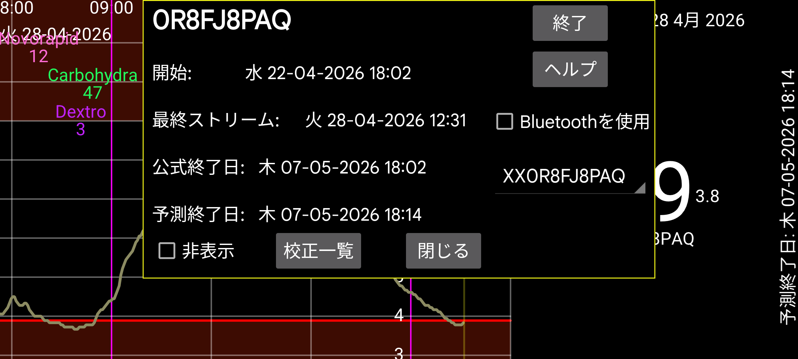

ar de es hi it ja nl pl ru tr uk uz en
Juggluco がストリーム値のミラーとして機能している場合に、センサーに関する情報を表示します:
開始: センサーが開始された時刻。Libre センサーでは最初の血糖値の 1 時間前です。
最終スキャン: センサーが最後にスキャンされた時刻。センサーエラーやセンサー交換エラーのためデータを受信せずにスキャンされた場合も、スキャンとしてカウントされます。
最終ストリーム: Bluetooth 経由で受信した最新の血糖測定値のタイムスタンプ;
公式終了: センサー製造元による終了時刻。
予想終了: 一部のセンサーは実際には公式終了時刻より長持ちします。Libre 1 と 2、Dexcom G7/ONE+ は 12 時間長持ちし、Sibionics センサーは約 10 日長持ちします。Libre 3 センサーだけは公式終了時刻を超えて持続しません。
非表示: チェックするとこの曲線を非表示にします。チェックを外すほか、画面右下の「表示」を押して曲線を再表示することもできます。
終了: このセンサーから Bluetooth 経由での血糖値の受信を停止します。再使用する場合は、センサーを再スキャンする必要があります。
Bluetooth を使用: この端末をセンサーと Bluetooth で直接接続します。これを使ってどの端末がセンサーと直接接続するかを変更できます。以前にセンサーと直接接続していた他の端末ではオフにする必要があります。両方の端末でミラー設定を変更し、ストリーム 値が逆方向に送信されるようにする必要もあります。相手側が WearOS ウォッチの場合、これは 1 つのボタンで実行できます: 左メニュー → ウォッチ → WearOS 設定 → 「センサーとウォッチの直接接続」。
複数のセンサーを使用している場合は、どのセンサーの情報を表示するかを選択できます。
校正: 左メニュー → 設定 → 校正で血糖ラベルを指定し、左中メニュー → 新規記録で血糖測定値を入力(除外されていない)していれば、「校正」ボタンを押して行われた校正の一覧を取得できます。参照: https://www.juggluco.nl/Juggluco/index.html#calibration
ウォームアップ: Sibionics と Linx/Lumiflex/Aidex X センサーでは、ウォームアップ期間の分数を変更できます。すべての機能はウォームアップ期間中のデータを無視します: 画面上の曲線、統計、エクスポートデータ、Web サーバーで見えるデータも、過去にさかのぼって無視されます。